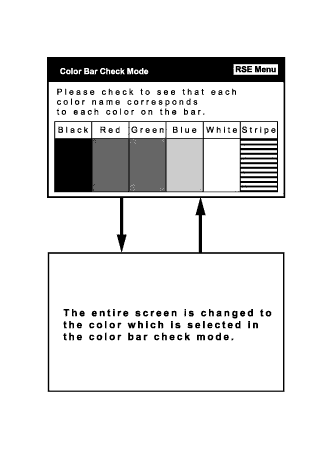

РАЗВЛЕКАТЕЛЬНО-ИНФОРМАЦИОННАЯ СИСТЕМА ДЛЯ ЗАДНИХ ПАССАЖИРОВ > ПРОВЕРКА РАБОТЫ СИСТЕМЫ |
| ВОЙДИТЕ В РЕЖИМ ДИАГНОСТИКИ |
Войдите в режим диагностики (Нажмите здесь).
| ПРОВЕРКА RSE |
Проверка цветовых полос
Выберите пункт "Color Bar Check" (проверка цветовых полос) в окне "RSE Check" (проверка системы RSE).
|  |
Выберите цветовую полосу из меню "Color Bar Check Mode" (режим проверки цветовых полос).
Проверьте отображенный цвет.
Проверка пульта дистанционного управления
Выберите пункт "Remote Commander Check" (проверка пульта дистанционного управления) в окне "RSE Check" (проверка системы RSE).
Нажмите на каждый переключатель и проверьте, правильно ли отображается его название и состояние.
Auto Open/Close Check (проверка автоматического открывания/закрывания) (в крыше)
Выберите пункт "Auto Open/Close Check" (проверка автоматического открывания/закрывания) в окне "RSE Check" (проверка системы RSE).
Подтвердите количество циклов открывания/закрывания телевизионного дисплея.